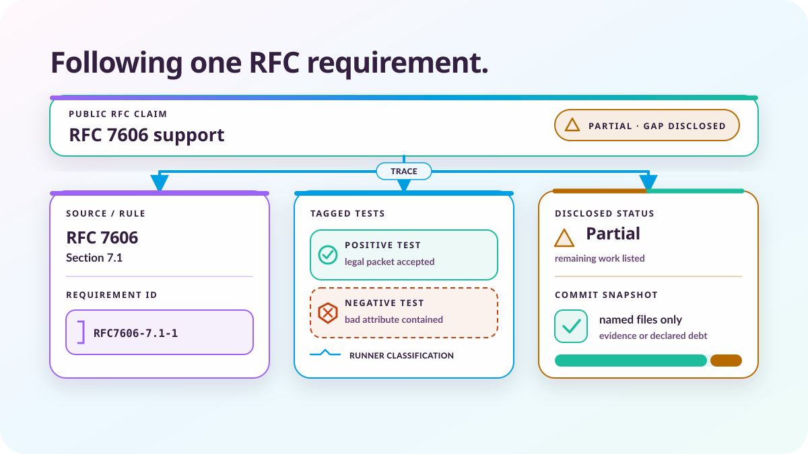
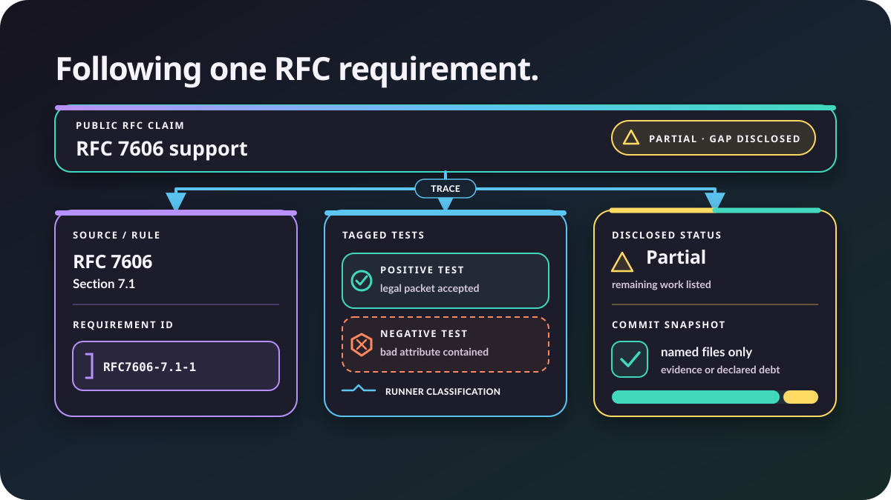
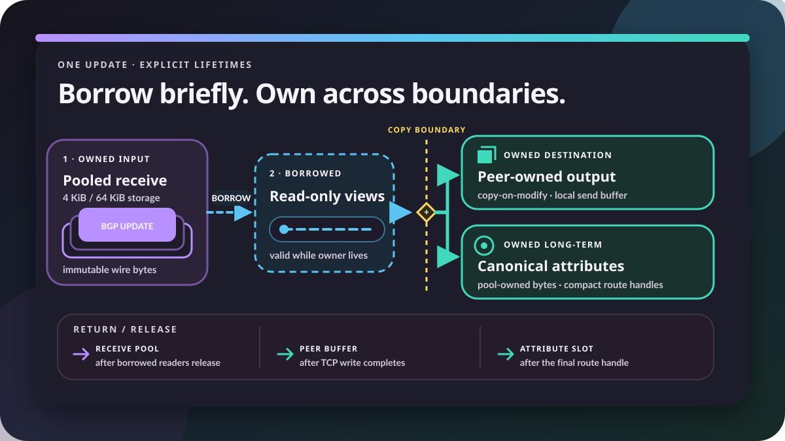
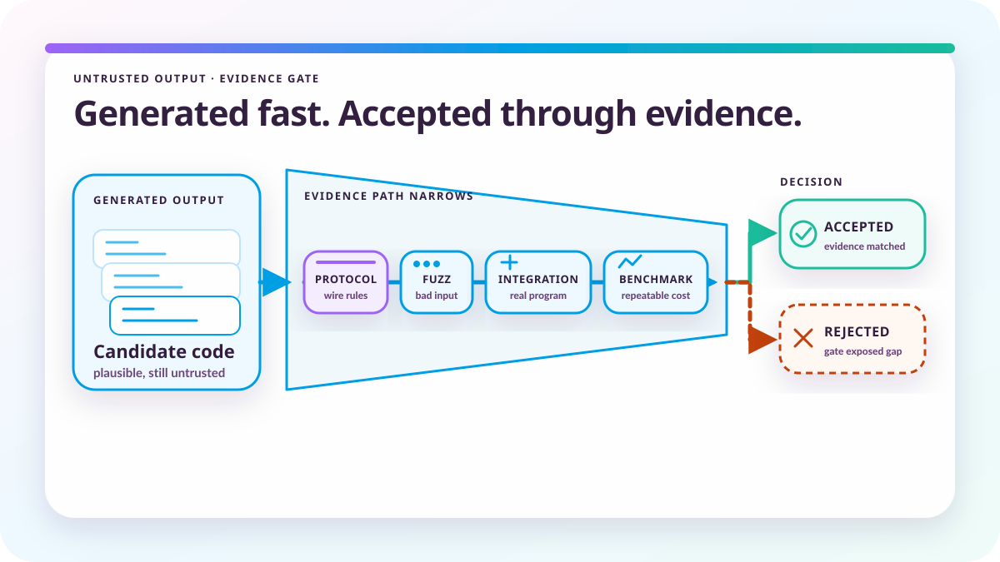

Keeping documentation in step with the code
Ze generates public reference from its code and records, with links to the decisions behind them. Operators and future AI sessions can use the same maintained account of the system.
Read the articleDesign notes, deep dives, and engineering essays on how Ze is built. For week-by-week shipping notes, read the changelog.
Ze generates public reference from its code and records, with links to the decisions behind them. Operators and future AI sessions can use the same maintained account of the system.
Read the article

AI coding needs shared conventions for connecting requirements and design decisions to their implementation, and for keeping those relationships current.
Read the article

Ze's development rules define what an AI agent must achieve and how to check the result, including the qualities a working demonstration can leave untested.
Read the article

Ze aims to meet every applicable mandatory RFC requirement. Interoperability labs and tests tied to the RFC text help establish what the running router does and which claims remain unverified.
Read the article

From the Amiga demo scene to BGP UPDATEs, earlier experience informs how Ze reuses memory and avoids unnecessary allocation in Go.
Read the article

AI often writes better code than I would, and far more tests per feature. I judge that code by what it does and the evidence behind it, and remain responsible for what Ze releases.
Read the article